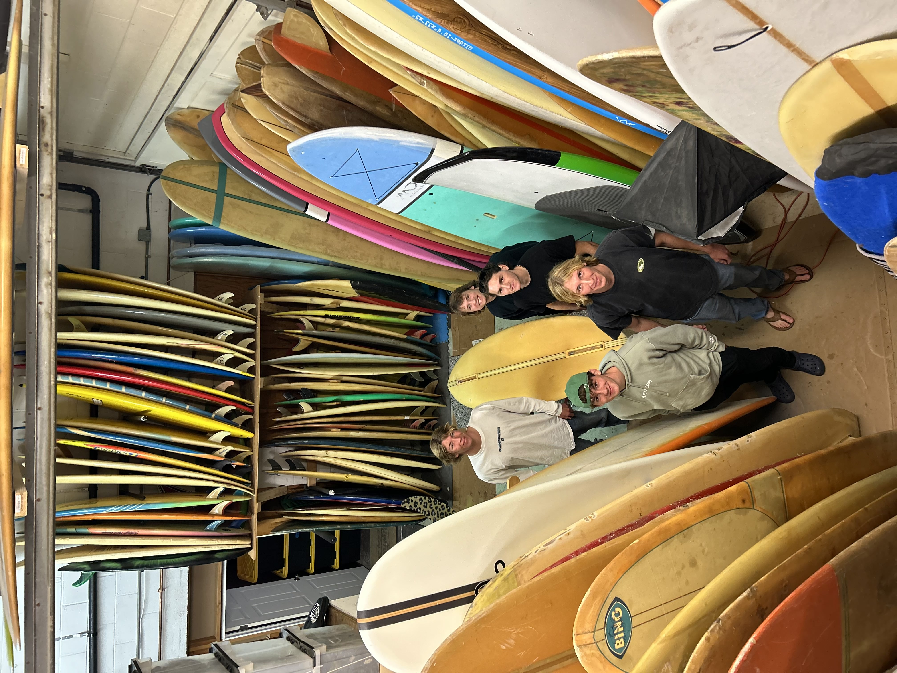
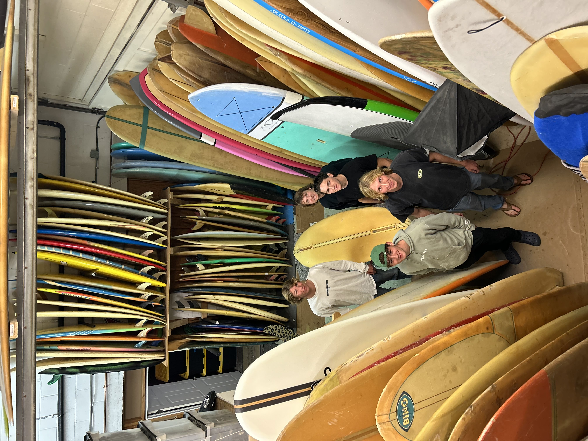
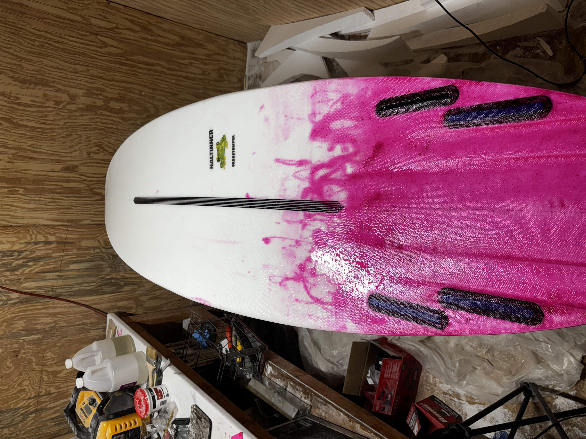
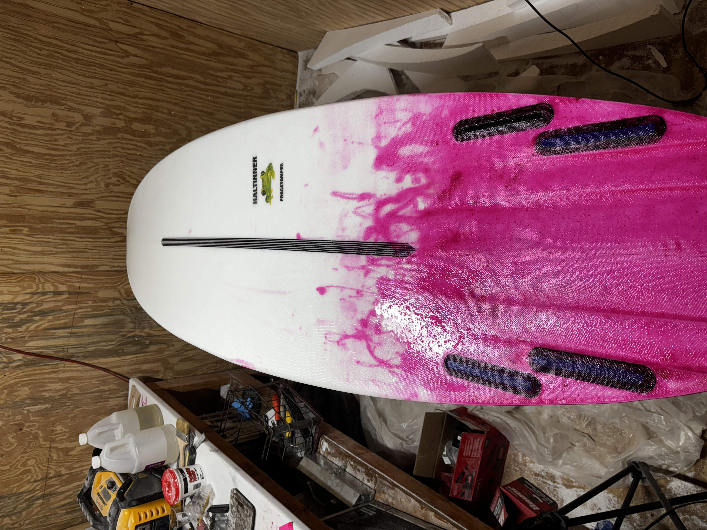
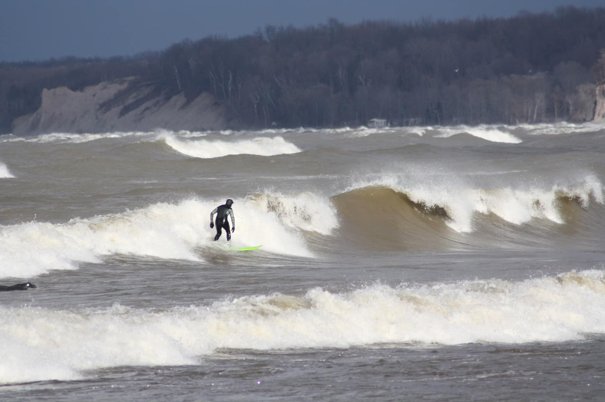
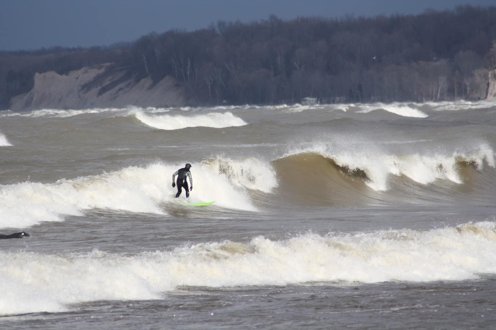

Outside of cybersecurity and IT, I spend a lot of time outdoors and working on technical hobbies that keep me active and curious. These interests have helped me build discipline, focus, and hands-on problem-solving skills that I bring into my professional work.
I surf primarily on the Great Lakes, especially Lake Ontario. Surfing in this environment requires close attention to weather, wind, and swell patterns, as well as patience and persistence. It has taught me how to prepare, adapt quickly, and stay calm under pressure.
 


 

 


I also build and fly FPV drones. This involves selecting components, soldering electronics, configuring firmware, and troubleshooting hardware issues. Drone building has strengthened my attention to detail and comfort working with hardware and software together.
In addition to surfing, I have experience in running and triathlon. Competing in distance events has given me a strong foundation in time management, goal-setting, and consistency—qualities that carry over into my academic and professional work.